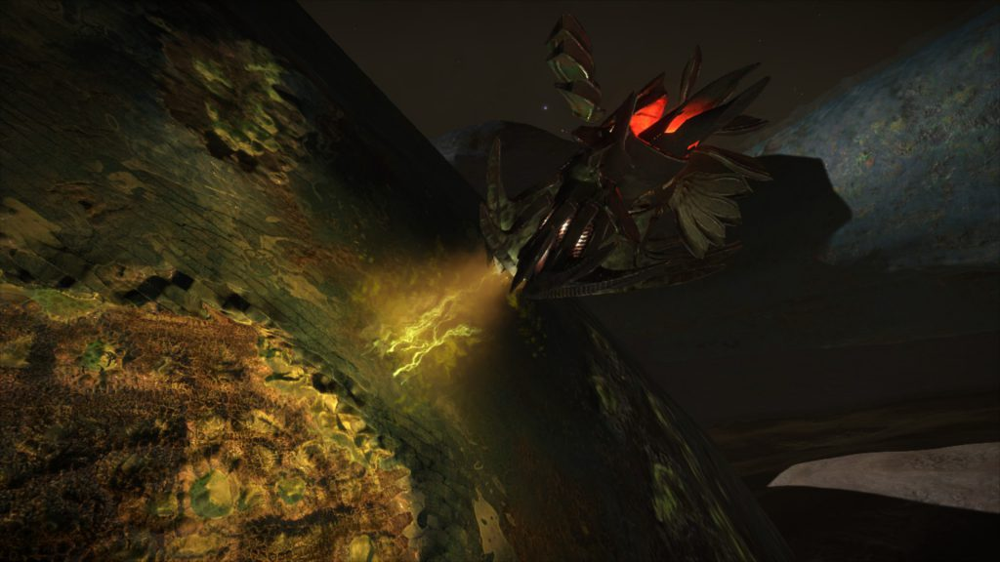

Scavengers are found at the Large Thargoid structures found around the Pleiades sector, not much is currently known about them, but what we have observed gives us an idea about what they could possibly be doing.
Video by Obsidian Ant that briefly mentions Scavengers.
Scavenger drones have so far been found at the huge alien structures found on planets and at Barnacle Forest Sites, there activity has most notably been found at the active structure. It is unclear whether they are organic or metallic, but their propulsion system has similarities to that of the Thargoid ship and can be compared to that of a water turbine. The scavengers also share a number of interesting physical similarities with the Thargoid ship. From petals or fins, a midsection set of petals and a rear set. There movement is also fluid in a appearance.
After watching a scavenger drone for a few minutes you’ll quickly realize a pattern in its activity they appear to extract or absorb some sort of substance (acidic in appearance) from the walls of the skeletal structures or from the ground around the site before moving elsewhere and depositing ( what looks like the same substance they took in), while this happens on the skeleton like structures around the active site this can also be seen happening within the structures corridors and around the center of the site.
As of writing this it is unclear the scavengers purpose, some have theorized that it may be attempting to repair the structure, and others as it’s name suggest may be scavenging the site.
The scavenger also appears passive in nature and doesn’t appear to bother you in any hostile way, however if fired upon they will turn hostile towards you and proceed to attack by spitting, as it appears there’s no primary source of weaponry on the drone.

Scavenger extracting
The Scavengers have also been found at the Barnacle Forests in groups of around 4-5, it’s unclear why they are at the Barnacle sites, however it is clear they are related to the Thargoids in some way. They don’t appear to be doing anything too specific at these sites, just loitering around. Which begs many questions, like what is their real purpose?